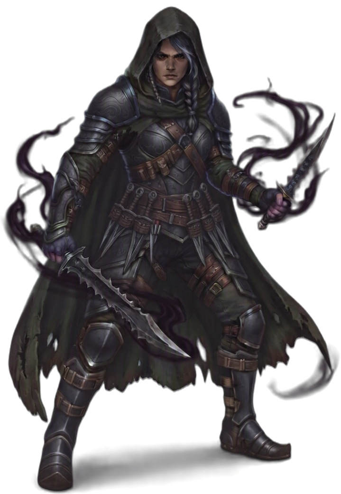

| Rolle | Bewegungskämpfer · Assassine · Drittelzauberer (Schattenmagie) · Teleport-Kämpfer |
| Zauberertyp | Drittelzauberer Zauberslots bis Rang 4 |
| Primärer Schadensattribut | Geschick (DEX) |
| Sekundärer Schadensattribut | Intelligenz (INT) |
| Zauberattribut | Intelligenz (INT) |
| TP (L1) | 8 |
| TP pro Level | 5 |
| Rüstung | Leicht |
| Waffen | Schattenwaffen — Dolche, Schwerter, Bögen, Armbrüste, Wurfwaffen, Zauberstäbe |
| Rettungswürfe | Geschick (DEX), Intelligenz (INT) |
| Attributsteigerung (Level) | 4, 8, 10, 12, 16 |
| Fertigkeiten (4 zur Auswahl) | Schleichen, Fingerfertigkeit, Akrobatik, Lügen, Einschüchtern, Nachforschung, Wahrnehmung, Überzeugen |
Die SCHATTENKLINGE ist ein Assassine aus der Dunkelheit — sie teleportiert durch Schatten, schlägt aus dem Versteck zu und verschwindet wieder. Geschick treibt die Klinge, Intelligenz treibt die Schattenmagie, und beides zusammen macht sie zur tödlichsten Spitzenschaden-Klasse auf dem Feld. Als Drittelzauberer nutzt sie Schattenmagie nicht für Kontrolle oder Heilung, sondern für Mobilität und Bonus-Schaden: Schattenklang macht sie unsichtbar, Schattenschritt teleportiert sie hinter den Gegner, Todesstoß erweitert den Kritischen Bereich. Sie ist kein Frontkämpfer — sie ist ein Bewegungskämpfer der kommt, zuschlägt und verschwindet. Im Dunkeln ist sie nahezu unfindbar: Schattenmantel gibt Angreifern Nachteil, Meisterschatten macht sie nach jedem Angriff wieder unsichtbar. Wer eine SCHATTENKLINGE jagt, jagt einen Schatten.
| Level | Fähigkeit | Beschreibung |
|---|---|---|
| L1 | Schattenschlag | Passiv: +1W6 GEIST Schaden bei Angriff aus dem Versteck (1/Zug). |
| L2 | Schattenwissen | Passiv: +1 Intelligenz. |
| L3 | Schattenpfad | Schatten-Technik wählen (narrativ — prägt die Assassinen-Kunst). |
| L5 | Zusätzlicher Angriff | 2 Angriffe pro Angriffs-Aktion. |
| L6 | Schattenmantel | Passiv: Angreifer haben Nachteil bei Dämmerung/Dunkelheit. |
| L7 | Verbesserter Schattenmantel | Passiv: Schattenmantel-Malus reduziert von -5 auf -3. |
| L9 | Schattengleichgewicht | Passiv: +2 Geschick. |
| L10 | Schattenklinge | Passiv: +INT-Modifikator GEIST Zusatzschaden auf alle Waffenangriffe. |
| L11 | Zusätzlicher Angriff 2 | 3 Angriffe pro Angriffs-Aktion. |
| L13 | Verbesserte Schattenform | Passiv: Resistenz gegen physischen Schaden (50% Reduktion). |
| L14 | Schattenform | Verwandlung in Schattengestalt (Form-System). Schattenschritt wird freigeschaltet. |
| L14 | Schattenschritt | Bonus-Aktion: Teleport bis 6m in Schatten. 1/Kurze Rast. |
| L15 | Meisterschatten | Auto-Verstecken 1/Kurze Rast nach einem Angriff. |
| L17 | Schattenfürst+ | Passiv: Schattenschritt unbegrenzt einsetzbar. |
| L18 | Meister der Schatten | Passiv: Vorteil auf alle Angriffe bei Dämmerung/Dunkelheit. |
| L19 | Perfekter Schatten | Passiv: +2 Geschick (Maximum 24). |
| L20 | Schattenfürst | 1/Zug: Werde unsichtbar nach einem Angriff bei Dämmerung. |
Alle Zauber nutzen Zauberslots (Drittelzauberer-Progression, Rang 1–4). Zauberattribut ist Intelligenz (INT). Upcast-Skalierung bei Schattenschlag (+1W6), Schattenschlag-Basiszauber (+1W6).
| Fähigkeit | Aktion | Nutzung | Level | Beschreibung |
|---|---|---|---|---|
| Schattenschlag | Aktion | Basiszauber — unbegrenzt | L1 | GEIST 1W6 im Nahkampf (Reichweite 1). Upcast mit Zauberslot: +1W6 pro Slot. |
| Fähigkeit | Aktion | Nutzung | Level | Beschreibung |
|---|---|---|---|---|
| Dunkler Stich | Aktion | Zauberslot 1 | L1 | SCHATTEN Waffenangriff + 1W6 Schatten Bonus-Schaden. |
| Verbluffung | Aktion | Zauberslot 1 | L1 | Waffenangriff + Ziel muss WIS-Rettungswurf ablegen oder bekommt Nachteil auf den nächsten Angriff. |
| Schattenklang | Bonus-Aktion | Zauberslot 1 | L1 | SCHATTEN Werde unsichtbar bis Ende des Zuges. |
| Vergiften | Aktion | Zauberslot 1 | L1 | Waffenangriff + Ziel muss KON-Rettungswurf ablegen oder wird vergiftet (3 Runden). |
| Schreckenschlag | Aktion | Zauberslot 2 | L3 | GEIST Waffenangriff + 2W6 Geist + Ziel muss WIS-Rettungswurf ablegen oder wird verängstigt (1 Runde). |
| Doppelangriff | Bonus-Aktion | Zauberslot 2 | L3 | SCHATTEN +1 Waffenangriff diesen Zug. |
| Schattengriff | Aktion | Zauberslot 2 | L3 | SCHATTEN Reichweitenangriff: 1W6 Schatten über 10ft Entfernung via Schatten. |
| Todesstoß | Aktion | Zauberslot 3 | L5 | SCHATTEN Waffenangriff + 3W6 Schatten + Kritischer-Bereich 19-20 für diesen Angriff. |
| Schattenexplosion | Aktion | Zauberslot 3 | L5 | SCHATTEN Flächeneffekt 10ft um sich: 3W6 Schatten + GES-Rettungswurf (halber Schaden bei Erfolg). |
| Meister der Schatten | Aktion | Zauberslot 4 | L7 | SCHATTEN Verbesserte Schattengestalt: +2 RK + Immunität gegen Gift für 1 Minute. |
| Schattenfürst | Aktion | Zauberslot 4 | L7 | SCHATTEN 4W8 Schatten + Angriffswurf, Reichweite 12, ignoriert Deckung. |
| Fähigkeit | Beschreibung |
|---|---|
| Schattenmantel | PASSIV Angreifer haben Nachteil gegen dich bei Dämmerung/Dunkelheit. |
| Verbesserte Schattenform | PASSIV Resistenz gegen physischen Schaden (50% Reduktion). |
| Ressource | Mechanik | Verfügbarkeit |
|---|---|---|
| Zauberslots | Drittelzauberer-Progression (Rang 1–4). Zauberattribut: INT. | Alle Zauber, pro Zauberslot |
| Schattenklinge | +INT-Mod GEIST Zusatzschaden auf alle Waffenangriffe (hardcoded) | Ab L10, passiv |
| Schattenschritt | Bonus-Aktion: Teleport bis 6m in Schatten | Ab L14, 1/Kurze Rast — ab L17 unbegrenzt |
| Auto-Verstecken | Automatisch unsichtbar nach Angriff | Ab L15, 1/Kurze Rast — ab L20 1/Zug |